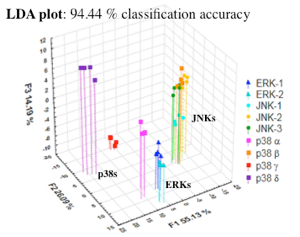
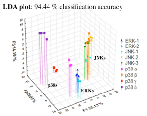

Research in the Anslyn Group
Broadly speaking, our group focuses on physical organic and supramolecular chemistry. Using mechanistic insights and knowledge of photophysics, we devise sensing systems for real-life applications. In particular, we create rapid screening assays for enantiomeric excess, diastereomeric excess, and reaction yield, as a means of facilitating reaction discovery in catalytic asymmetric induction. In addition, our analytical efforts involve the area of differential sensing, where an array of cross-reactive sensors are used to create patterns that are diagnostic of individual analytes or the consistency of complex mixtures. The current focus is on the classification of kinase activity in cells, and the potential to rapidly screen kinase inhibitors in a parallel fashion. Very recently, our group has delved into the area of reversible covalent bonding, creating a suite of reactions that can all occur simultaneously in the same solution with no crossover between them. We are exploiting these reactions for material applications, polymer synthesis, complex assembly formation, and self-replicating oligomers. Finally, we have active collaborations with the Ellington and Marcotte groups for generating sequence defined polymers and single molecule peptide sequencing routines.
Determination of Enantiomeric Excess of Alcohols, Amines, Aldehydes and Carboxylic Acids

Stereoselective synthesis is a major research area in organic chemistry, and numerous asymmetric reactions based upon either metal catalysis or oranocatalysis have been developed for the preparation of chiral building blocks. Because of the development of technologies for parallel synthesis and screening for catalyst optimization purposes, there is a need for rapid analysis of the absolute configuration and enantiomeric excess (ee) of the products of the asymmetric reactions. Traditional chromatographic techniques, such as gas chromatography (GC) and high-performance liquid chromatography (HPLC) are not readily adaptable to high-throughput screening (HTS) of ee as optical methods could be, and as a result, the analysis of chirality by various spectroscopic methods is currently of interest. Optical methods are fast and cost-effective and importantly, can be easily implemented into HTS. Toward this end, we have developed protocols for using in situ generated multicomponent assemblies monitored by exciton-coupled circular dichroism (ECCD) for the determination of identity, chirality and enantiomeric excess of alcohols, amines, aldehydes/ketones and carboxylic acids.
Related Publications:
1. You, L.; Long, S. R.; Lynch, V. M.; Anslyn, E. V. Chem. Eur. J. 2011, 17, 11017- 11023.
2. You, L.; Berman, J. S.; Anslyn, E. V. Nature Chemistry. 2011, 3, 943-948.
3. Joyce, L. A.; Maynor, M. S.; Dragna, J. M.; da Cruz, G. M.; Sorey, S.; Canary, J. W.; Anslyn, E. V. J. Am. Chem. Soc. 2011, 133, 13746-13752.
Cooperative Assemblies and Orthogonal Dynamic Covalent Reactions


Among others, our group, and that of Wolf, have reported methods for the ee determination of chiral analytes bearing functional groups such as amines, amino alcohols, amino acids, carboxylates, and secondary alcohols. For the most part, the errors for these methods lie in the range of 3-8%. These errors have generally been viewed to be low enough to identify hits by high-throughput screening, but in order to distinguish a 99% ee from a 97% ee, it would still be necessary to employ more accurate methods such as chiral HPLC. To this end, we have shown how to lower the error in circular dichroism (CD) based ee determination by taking advantage of the majority rules effect in helical polymers. If a polymer exhibits this effect, a nonlinear response to the ee of chiral monomer units is observed. Due to the relatively high enthalpic penalty of helix reversal in these polymers, small ee’s in the monomer units can lead to an almost complete preference of the polymer for only one helical twist. If the polymer backbone contains a chromophore, this preference can be read out via CD, leading to a sigmoidal curve when CD intensity is plotted against ee, with the highest slope of the curve around 0% ee. This effect has been successfully used to detect very small ee’s of amino acids, of less than 0.005%. However, distinguishing low ee’s is not usually of much value, particularly in asymmetric catalysis development. On the other hand, it would be advantageous to use the intense slope of the CD response curve around 0% ee to measure high ee’s accurately. We envisioned that this could be achieved by adding an equivalent amount of the opposite enantiomer to a sample of unknown ee. By doing so, a sample of e.g. 95% ee would be converted to a sample of 2.5% ee, which would lie in the sensitive region of the CD response curve. Using this method, ee determination was possible with absolute errors as low as 0.2. Ultimately, the improved errors using such systems could make chiral HPLC unnecessary to distinguish between the best hits in a screen using CD spectroscopy.
Related Publications:
1. Seifert, H; Jiang, Y.; Anslyn, E. V. Chem. Sci., 2014, 50,15330-15334.
Differential Sensing of MAP Kinases Using SOX-Peptides
 


Mitogen-activated protein kinases (MAPKs) are key regulators of cellular processes, and their aberrant activity is associated with several diseases: cancer, diabetes, and neurodegenerative and hematological malignances. MAPKs are classified in three major groups, the extracellular signal regulated kinases (ERK1/2), the c-jun N-terminal kinases (JNK1/2/3), and the p38 MAPKs (p38a/b/g/d). Conventional detection methods for these groups, and their isoforms, rely either on the use of radioassays or antibodies. More recently, optical-based biosensors have emerged to detect kinase activity. For instance, the peptide-based sensors developed by the Imperiali group, containing a sulfonamidooxine (SOX) fluorophore, is a leading approach. Upon peptide phosphorylation proximal to SOX, this fluorophore increases its affinity for Mg2+, resulting in chelation-enhanced fluorescence. Using the fluorescence sensing strategy reported by the Imperiali group, five SOX peptides with distinctive docking sites for MAPKs were used to classify the MAPK groups and isoforms thereof using chemometrics. This array was used to qualitatively differentiate each of the following: ERK1/2, JNK1/2/3, and p38a/b/d/g. In addition, changes of kinase concentration, as well as specific inhibitor concentration, were quantitatively detected in kinase mixtures. Further, the chemometric results revealed unexpected cross-reactivity of the SOX-peptides, and interdependences between the kinases that otherwise would not necessarily be evident.
Related Publications:
1. D. Zamora-Olivares, T. S. Kaoud, J. Jose, A. Ellington, K. N. Dalby, E. V. Anslyn, Angew. Chem. Int. Ed. 2014, 53, 14064-14068.
Click and Declick Reactions Through a Reversible Amine and Thiol Conjugate Acceptors
The coupling and decoupling of molecular units is a fundamental undertaking of organic chemistry. Our group has reported the use of a very simple conjugate acceptor, derived from Meldrum's acid, for the sequential ‘clicking’ together of an amine and a thiol in aqueous conditions at neutral pH. Subsequently, this linkage can be ‘declicked’ by a chemical trigger to release the original amine and thiol undisturbed. The reactivity differs from that of other crosslinking agents because the selectivity for sequential functionalization derives from an altering of the electrophilicity of the conjugate acceptor on the addition of the amine. We describe the use of the procedure to modify proteins, create multicomponent libraries and synthesize oligomers, all of which can be declicked to their starting components in a controlled fashion when desired. Owing to the mild reaction conditions and ease of use in a variety of applications, the method is predicted to have wide utility.
Related Publications:
1. Diehl,K.; Kolesnichenko, I.; Robotham, S.; Bachman, J.; Zhong, Y.; Brodbelt, J.; Anslyn, E. Nature Chem. 2016, 8, 968-973.